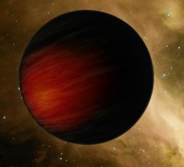

| Ca se voit que c'est loin d'être fini, non? ^^ |
Rapport de l'ANIP sur les données planétaires. Confidentialité maximale. La divulgation de ces données, en particulier de celles relatives aux causes véritables de l'opacité atmosphérique, constitue un crime de trahison et est puni de mort par injection rétrovirale.
| Caractéristiques Planétaires | |
|---|---|
 | |
| Données Pratiques: | |
| Nom: | Exima |
| Coordonnées SU: | 5.7.*.*.* |
| Capitale: | Exima Central |
| Données Physiques: | |
| Masse: | 6,02E24 kg |
| Rayon Moyen: | 6,1E6 m |
| Paramètre gravitationnel standard µ: | 4,02 uSG |
| Intensité Moyenne de la Pesanteur: | 10,798 m/s² |
| EPI: | +10,12 % |
| Vitesse de Libération: | 11,478 km/s |
| Données orbitales: | |
| Distance Moyenne au Soleil: | 1,6 UA |
| Excentricité orbitale: | 0.3 |
| Obliquité de l'axe: | 29,90° |
| Période de rotation: | 26 heures standards |
| Période de révolution: | 400 jours standards |
| Vitesse orbitale: | 43 633 m/s |

Exima est une planète tellurique colonisée située dans le Secteur 7 de la Galaxie Aurore. Elle est actuellement gouvernée par l'Office Administratif Général d'Exima (OAGE), dirigé par le Docteur Jephtar Clelia.
Géographie et Climatologie
| En Bref |
|---|
| Exima est une planète minière. La double influence d'une terraformation hâtive et d'une négligence en matière d'écologie engendre un environnement hautement pollué, inhospitalier, incarné spectaculairement par la chape de pollution qui plonge la planète dans une nuit perpétuelle. Les dix milliards d'habitants sont entassés dans cinq mégapoles et subissent de plein fouet toutes les erreurs de leurs ancêtres colonisateurs. |
Planétogénèse et intérêt géologique
Exima est située à 1,6 UA d'un Soleil de type S (standard). En l'absence de toute intervention humaine, la planète aurait donc été trop froide pour abriter une vie autre que bactériologique (éventuellement quelques pseudo-lichens également).
Elle a cependant la caractéristique d'être située en zone médiane du système, près de la Ceinture d'astéroïdes qui sépare généralement les planètes telluriques des géantes gazeuses. Ici la Ceinture est moins dense, parce qu'une grande partie des matériaux disponibles ont été incorporés par Exima lors de sa formation. Or les géologues des compagnies minières savent que la synthèse de Velum, minerai rare et précieux, passe par une irradiation spécifique du nuage protoplanétaire. Et les données des observatoires indiquaient qu'un sursaut Gamma avait eu lieu, il y a trois milliards d'années , à environ six-cent millions d'années lumières du système où se trouvait Exima alors en formation. Il y avait donc une assez forte probabilité de trouver du Velum sur Exima, configuration généralement assez rare. D'énormes gisements furent effectivement découverts quelques mois plus tard. Exima se révéla ainsi, il y a environ deux-cents ans, d'un intérêt commercial justifiant une terraformation accélérée.
Remarque: du fait du très haut magnétisme rémanent du Velum, l'utilisation d'appareils électroniques devrait être impossible sur Exima. Or ce n'est pas le cas. On ne sait pas très bien pourquoi, mais on a constaté que le velum lithosphérique avait une activité magnétique très faible. Le velum mantellique, lui, est tout à fait normal. On suppose que le velum lithosphérique a un effet de barrière; sa neutralisation pourrait être due à la vague magnétique.
Photochimie Atmosphérique: Exima Nocturna
Exima est plongée dans une nuit perpétuelle depuis maintenant cinq ans. La raison tient à des effets photochimiques complexes dans la troposphère et la stratosphère. Pendant les deux-cents ans d'exploitation du velum, Exima a bien entendu connu d'intenses rejets de gaz polluants. Mais les exploitants ignoraient que l'atmosphère présentait un gaz très rare, de nature organique, en soi inoffensif mais qui peut réagir avec certains polluants. Le produit de la transformation est une espèce chimique opaque qui catalyse la transformation de ses propres précurseurs sous l'action des photons solaires. Il y a donc une boucle de rétroaction positive amplifiant sans cesse la vitesse de production du composé opacifiant. Les effets sont perceptibles depuis trente ans et le Soleil ne parvient plus à percer la couche de nuages depuis cinq ans.
"Guérir" l'atmosphère d'Exima ne saurait s'envisager sans un arrêt total, au mmoins temporaire, des productions industrielles. Ce cas de figure est hors de question. Aussi l'OAGE considère-t-il la nuit comme un mal nécessaire. La version officielle qu'il donne est que l'opacité à une origine parfaitement naturelle, en rapport notamment avec une éruption volcanique sous-marine (qui, bien qu'ayant eu lieu, n'a pas de rapport avec le problème). L'OAGE affirme également que les activités minières et les rejets qu'elles occasionnent ont un effet bénéfique sur l'atmosphère. L'IRIS traque activement les contrevenants à cette version des faits, pour la plupart membres d'une organisation terroriste nommée "Helios".
"Hiver d'impact"
Cas exceptionnel, la pollution croissante d'Exima ne s'est pas traduite par une augmentation violente de la température mais au contraire par un refroidissement progressif qui aujourd'hui tend à entrer dans un stade "hiver d'impact". Les facteurs qui ont conduit à cet état de fait sont multiples. D'une part, la terraformation d'Exima a été très rapide, de l'ordre de la vingtaine d'années. Elle est le cas d'école de la terraformation bâclée. Les travaux de magnéto-osmose et d'ajustement des quantités de gaz atmosphériques ont "endommagé" la capacité du système à absorber les changements de température. Le rejet des polluants a alors lentement contrebalancé les effets des opérations de terraformation: Exima retournait à son état initial de planète froide, et l'effet de serre n'était pas suffisant au vu de l'éloignement de la planète par rapport au Soleil. Quand la dernière nuit est tombée, la quantité de chaleur piégée était trop faible et le rayonnement solaire ne passait plus. La température de surface moyenne d'Exima est aujourd'hui de 4°C. Elle sera de 0°C d'ici vingt-cinq à soixante ans, puis de -3°C d'ici un siècle. A partir de là Exima deviendra planète glaciaire.
Eléments de météorologie Eximane
La dynamique atmosphérique Eximane tient surtout à des déséquilibres thermiques. Le différentiel de température entre la couche externe et la couche interne de l'atmosphère est de 600°C dans la zone exposée au Soleil. Cela crée un gradient thermique vertical violemment opposé à l'attraction gravitationnelle qui entretient les réactions d'opacification. Du fait de l'obliquité axiale, lorsqu'Exima est au périhélie (point le plus proche du Soleil) l'hémisphère Sud reçoit bien plus d'énergie que l'hémisphère Nord. Nouveau déséquilibre, gradient cette fois horizontal qui se traduit par une période de tempêtes très violentes qui sont généralement associées au début de l'année Eximane. Exima est sujette aux pluies acides (pH 3, voire 2 pour les cas extrêmes) et aux "pluies goudronneuses", lorsque les polluants organiques se condensent et retombent. Tout ceci a des effets désastreux sur la faune et la flore.
Atlas d'Exima
Exima présente 68% de terres émergées. Le seul et unique océan de la planète occupe une bonne part de l'hémisphère Sud. Il a été formé pendant la terraformation, à la fois par fonte de la calotte australe (provoquée à grand renfort de charges thermiques) et par libération de l'eau sous pression contenue dans une gigantesque nappe souterraine. L'océan est peu profond, avec 800 mètres de moyenne et 2000 de maximum. Les anciennes cartes évoquent une grande île approximativement au centre de l'étendue d'eau, mais personne ne s'en est jamais préoccupé. Aujourd'hui, il est bien sûr impossible de recourir à une cartographie satellitale.
Le continent présente 5 mégapoles qui concentrent 96% des 10 milliards d'habitants dans 15% de la superficie planétaire. Les conditions de vie sont atroces: ces villes sont principalement construites sous terre, dans les cavités laissées par l'extraction du velum. Le taux de suicide atteint certaines années les 18%. La plus grande ville, qui est aussi la capitale d'Exima, est Exima Central, qui tend à former une conurbation avec Madranese, autre megapole initialement située à 800 km de la capitale.
Au niveau topographique les zones non habitées se caractérisent par un relief très accidenté. Le point le plus élevé d'Exima culmine à 9362 m d'altitude. Il s'agit d'un pic montagneux dominant un plateau baptisé Plateau de Phtaerg, région réputée hostile et difficile d'accès. La rumeur veut que c'est là que se cachent les terroristes du groupe "Helios", mais toute nos missions de reconnaissance se sont heurtées à la violence de l'environnement. Notons que ce plateau a une superficie de près de 300 km², ce qui ne facilite pas les recherches.
Histoire
Un premier siècle frénétique
L'annonce, il y a deux-cents ans, de la découverte des gisements de velum entraîna une vague de peuplement d'une énorme importance. On pouvait, moyennant une taxe d'installation à la compagnie minière, obtenir un logement sommaire et le droit de prospecter un peu partout. Hormis ce droit à payer, il n'y avait aucune réglementation ce qui explique que des mines et des raffineries plus ou moins aux normes aient vite parsemé le paysage sans aucune concertation. Les blocs d'habitation n'étaient guère plus que des barraquements de plusieurs étages. Les cinq villes, organisées sur les cinq veines majeures de minerai, commençaient à se former. Les conditions de vie sur une planète à peine terraformée étaient certes éprouvantes, mais les gens acceptaient cela comme le pendant de la richesse qu'ils étaient à même d'acquérir. De nombreux habitants des planètes centrales, voire de Jonction elle-même, tentèrent leur chance dans ce qu'ils voyaient comme un eldorado. C'est ainsi que dans les mines se côtoyaient toutes les catégories sociales, de l'ouvrier licencié à l'aristocrate blasé. Il faut comprendre qu'à l'époque personne n'envisageait de s'installer sur Exima de manière définitive: on arrivait, on creusait, on trouvait avec un peu de chance, et cinq ans plus tard on rentrait en métropole avec une confortable somme. Les activités minières étaient facilitées par le développement de techniques de prospection accessibles à tous ou presque: par exemple une coopérative de mineurs pouvait pour quelques milliers de £eems louer un instrument sur un satellite gravimétrique de la compagnie pendant une journée, ou se rabattre sur les gravimètres à main pour 200£...
Pendant un siècle les choses se poursuivirent à ce rythme, amenant la population d'Exima à près de sept milliards. Le Planétologiste dissident Nigura Erno affirme que la population avait dépassé la capacité d'accueil planétaire dès la huitième année. Nos propres experts sont plus réservés.
L'erreur atomique: crise minière et désillusions
Après cent ans de "frénésie du trou", l'industrie minière commença à montrer des signes bien normaux de ralentissement. Malgré tout la production aurait pu demeurer à des niveaux élevés pendant encore longtemps si n'était survenue un évènement aujourd'hui couramment évoqué sous le terme d'erreur atomique. Un riche bourgeois du nom de Brutus Logham débarqua sur Exima avec des têtes nucléaires de contrebande dissimulées dans les conteneurs anentropiques de la garde-robe de sa maîtresse. Montrant par là sa totale inexpérience il utilisa ces charges pour ouvrir de nouvelles carrières à ciel ouvert à environ 900 km au Nord-Est de la ville de Cesaro. Or le velum non raffiné est extrêmement instable en présence de radiations, et se dégrade en des composés inertes sans intérêt économique. Par une réaction en chaîne, les explosions atomiques causèrent la perte des deux tiers des réserves de velum sub-crustal, celui dont le rapport rentabilité/difficulté d'extraction était optimal. On venait de fermer les robinets et la majorité des mineurs présents étaient désormais bloqués sur Exima. Ils se résignèrent à finir leur vie dans les blocs résidentiels sordides d'une planète de plus en plus polluée, dans la promiscuité et le manque d'hygiène.
Impossible à extraire sans un matériel de haute technologie, le velum mantellique, seul restant, était réservé à ceux ayant les moyens de s'offrir des foreuses de la taille d'un village et des charges "propres", sans danger pour le minerai mais aussi très coûteuses. Conséquence: la Compagnie d'Exploitation d'Exima (CEE) reprit en immportance, bientôt concurrencée par l'Alliance Minéralogique (AM), conglomérat formé par les riches promoteurs indépendants, puis par la Coopérative Globale (CG), initialement mouvement syndicaliste des petits ouvriers qui se révéla en fait adopter les méthodes du capitalisme avec un entrain étonnant.
Guerre des Conglomérats et timides tentatives démocratiques
La concurrence entre les conglomérats fut si acharnée qu'elle passa parfois par le recours à des mercenaires et des milices privées pour attaquer des installations. Les quartiers des diverses villes étaient chacun contrôlés par une firme, et ces dernières y entretenaient un climat de défiance à l'égard des autres. L'opposition commerciale devint par moments affrontement idéologique. Les Eximans étaient maintenant les descendants des colons. Le statut social était immuable et héréditaire, relevant en pratique de la caste, définie par une profession, un conglomérat et un lieu de vie. La pollution entrainait une augmentation régulière de la prévalence des pathologies broncho-pulmonaires et des cancers en tous genres.
En 221 ETU, après la destruction d'un hôpital de la CEE par l'AM (via un gang des rues engagé pour l'occasion), certains citoyens décidèrent de faire entendre leur voix. Chose rare, plutôt que de prendre les armes, ils constituèrent un comité pacifique qui devint quelques années plus tard (226 ETU) un gouvernement légitime: l'Assemblée Populaire de la République d'Exima (APRE).
Bien entendu, les trois conglomérats s'empressèrent de prendre le contrôle de l'APRE. Ce fut chose faite moins de trois ans après sa création, lorsque les démagogues neomarxistes de la Coopérative Globale furent battus aux éléctions par les bureaucrates techno-libéraux socialistes de la Compagnie d'Exploitation d'Exima. Les trois conglomérats convinrent alors ensemble (pour la première fois) qu'il n'était pas judicieux du point de vue économique de laisser les Eximans participer à un gouvernement. Ils ne pouvaient toutefois renverser l'APRE sans s'aliéner la population qui y voyait l'une de ses rares lueurs d'espoirs. Subrepticement ils commencèrent donc à alourdir la structure gouvernementale. L'Assemblée Populaire devint une bureaucratie/technocratie délibérément complexe à l'outrage. Les "Haut-Fonctionnaires" non-élus, progressivement, eurent plus de pouvoir que les représentants. L'Ecole d'Administration Planétaire fut créée dans le but de former les nouvelles élites à contrôler les Eximans et à assurer les intérêts des conglomérats.
Enfin, en 256 ETU, pour la date anniversaire des trente ans de l'APRE, son président (affilié encore une fois à la CEE) annonça le remaniement de la République en un Office Administratif Général d'Exima. L'OAGE était né.